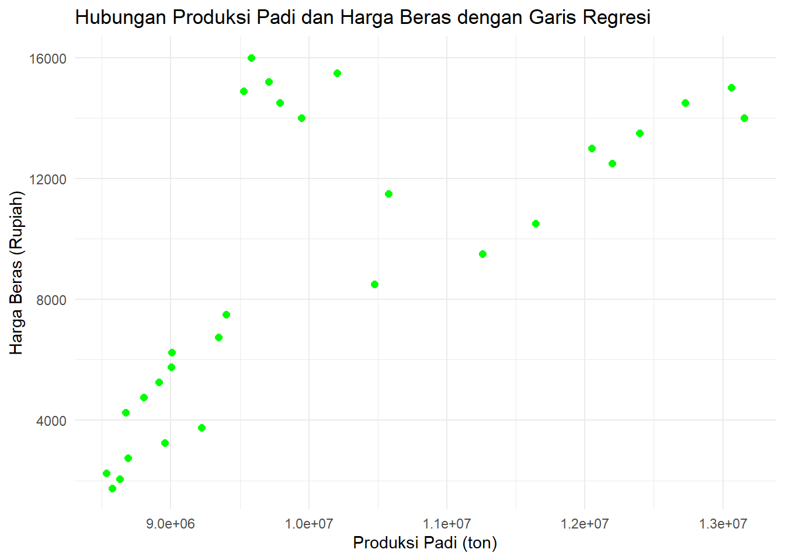
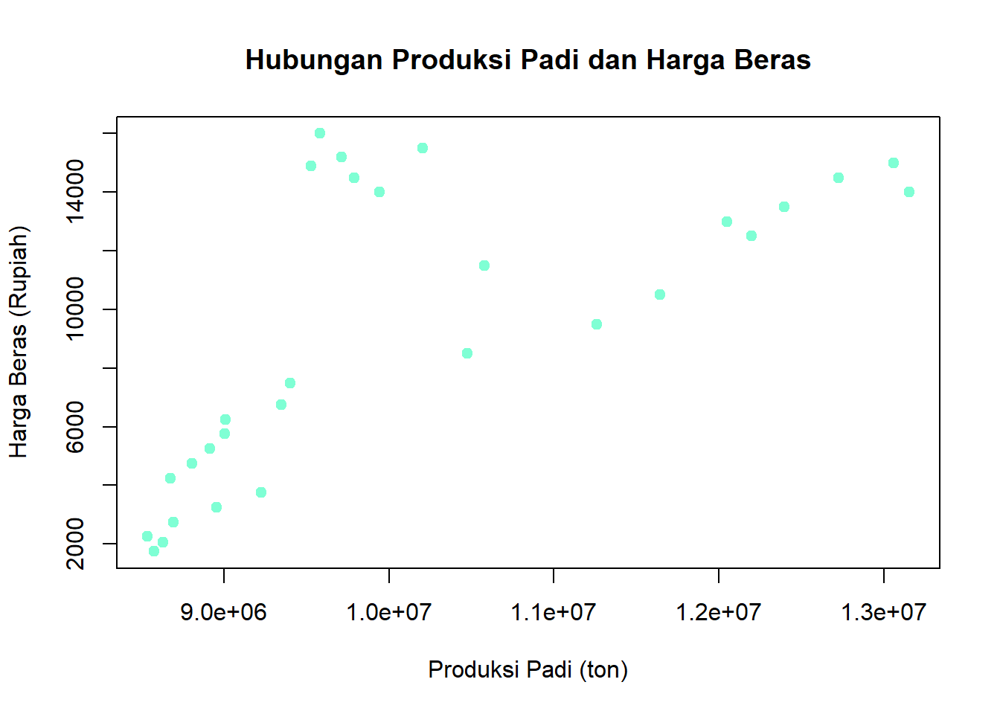
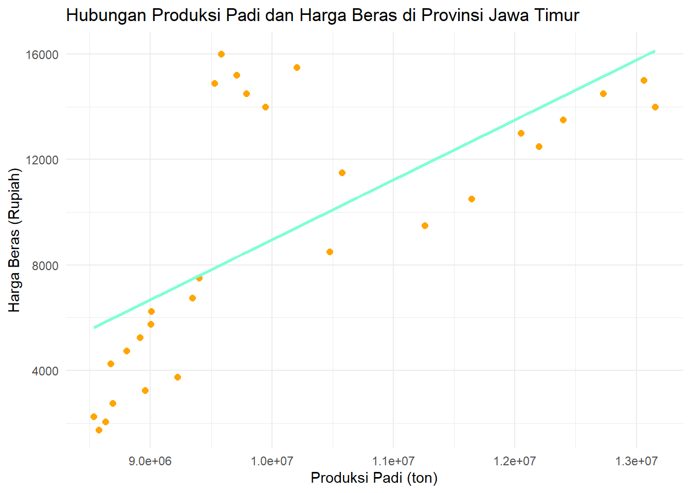

library(readxl)
library(ggplot2)Pengaruh Produksi Padi Terhadap Harga Beras di Provinsi Jawa Timur
Metode Penelitian Politeknik APP Jakarta

1 Pendahuluan
1.1 Latar belakang
Sebagai negara dengan sistem pertanian pangan Tangguh dan Swasembada Beras, Indonesia memiliki penghasilan padi yang cukup besar dari seluruh provinsi. Salah satu provinsi dengan peringkat pertama penghasil padi adalah Provinsi Jawa Timur. Jawa Timur menyuplai Sebagian besar kebutuhan beras Indonesia. Beras merupakan kebutuhan pokok penduduk Indonesia. Fluktuasi pada produksi padi dapat berdampak langsung pada ketersediaan beras dan harga di pasar.
Produksi beras yang selalu berubah ubah mengikuti pola tanam dan perubahan cuaca dapat mempengaruhi harga beras. Biasanya stok beras akan meningkat ketika masa panen (Februari-April) dan menurun ketika musim kemarau dan musim tanam (oktober-januari). Setiap tahun harga beras selalu berubah-ubah. ketika produksi padi menurun maka harga beras cenderung meningkat karena permintaan beras melebihi kemampuan penawaran, tetapi jika produksi padi meningkat maka harga beras akan turun.
1.2 Ruang lingkup
Penelitian ini berfokus pada hubungan antara jumlah produksi padi terhadap harga beras di Provinsi Jawa Timur dari tahun 1995 sampai 2023. Data yang digunakan adalah data pada wilayah Jawa Timur. Jawa Timur dipilih karena merupakan salah satu sentra produksi pada utama di Indonesia. Data didapatkan dari publikasi resmi seperti Badan Pusat Statistik (BPS) dan sumber lainnya yang relevan dan terpercaya.
1.3 Rumusan masalah
Bagaimana hubungan antara jumlah produksi padi dengan harga beras di provinsi Jawa Timur?
Apakah peningkatan jumlah produksi padi berpengaruh signifikan terhadap perubahan harga beras di Provinsi Jawa Timur?
1.4 Tujuan dan manfaat penelitian
Tujuan dari penelitian ini adalah untuk mengetahui hubungan antara jumlah produksi padi dengan harga beras, serta seberapa besar pengaruh antara jumlah produksi padi dengan harga beras.
Manfaat penelitian ini agar masyarakat paham mengenai faktor-faktor yang mempengaruhi perubahan harga beras.
1.5 Package
Ini tidak wajib ada di tulisan anda tapi anda dapat menunjukkan Packages yang digunakan antara lain sebagai berikut:
2 Studi pustaka
Produksi adalah proses kombinasi dan koordinasi bahan-bahan dan sumber daya untuk menghasilkan output. Beattie & Taylor (1994) menyatakan ketergantungan tingkat produksi dengan keputusan yang diambil petani, seperti jumlah input yang digunakan, luas lahan tanam, bibit, pupuk, pestisida, tenaga kerja, dll. Input produksi. Input produksi meliputi barang, bahan, dan elemen ekonomi lainnya yang di proses menjadi output berupa barang jadi atau setengah jadi. (Novita & Edy, 2024)
Hukum penawaran menyatakan terdapat hubungan positif antara harga barang dengan jumlah barang yang ditawarkan. Ketika harga barang mengalami kenaikan, maka jumlah barang yang ditawarkan bertambah, dan ketika harga barang menurun, maka barang yang ditawarkan mengalami penurunan. Hukum permintaan menyatakan Jika harga barang tetap, sedangkan permintaan meningkat, maka penawaran yang tersedia akan menjadi kurang memadai, yang dapat menyebabkan kenaikan harga. Jika harga barang tetap, sedangkan permintaan menurun, maka penawaran yang tersedia akan melebihi permintaan, yang dapat menyebabkan penurunan harga. (Achmad, et al., 2023)
Menurut teori harga Samoelson (2004) harga sangat dipengaruhi oleh tarik menarik antara permintaan dan penawaran jika pasar menggunakan sistem persaingan sempurna.Faktor-faktor yang mempengaruhi harga beras yang saling terikat dan tidak dapat dipisahkan adalah kualitas bahan baku padi, biaya distribusi, fluktuasi harga padi, biaya tenaga kerja, dan perubahan permintaan pasar. Faktor – faktor tersebut dikatakan pada penelitian di jurnal (Nuri & Muhammad , 2024)
3 Metode penelitian
3.1 Data
Data yang digunakan adalah Jumlah produksi padi dalam satuan ton dan Harga beras yang di jual dalam satuan rupiah dari tahun 1995 hingga 2023. Berikut data yang digunakan pada penelitian :
| Tahun | Jumlah Produksi (TON) | Rata-Rata Harga Beras (Rp/kg) |
|---|---|---|
| 1995 | 8573643 | Rp 1.750,00 |
| 1996 | 8628766 | Rp 2.050,00 |
| 1997 | 8533839,4 | Rp 2.250,00 |
| 1998 | 8691519,4 | Rp 2.750,00 |
| 1999 | 8691519,4 | Rp 3.250,00 |
| 2000 | 9224353 | Rp 3750,00 |
| 2001 | 8672791,268 | Rp 4.250,00 |
| 2002 | 8803878,508 | Rp 4.750,00 |
| 2003 | 8914994,665 | Rp 5.250,00 |
| 2004 | 9002025 | Rp 5.750,00 |
| 2005 | 9007265 | Rp 6.250,00 |
| 2006 | 9346947 | Rp 6.750,00 |
| 2007 | 9402029 | Rp 7.500,00 |
| 2008 | 10474773 | Rp 8.500,00 |
| 2009 | 11259085 | Rp 9.500,00 |
| 2010 | 11643773 | Rp 10.500,00 |
| 2011 | 10576543 | Rp 11.500,00 |
| 2012 | 12198707 | Rp 12.500,00 |
| 2013 | 12049342 | Rp 13.000,00 |
| 2014 | 12397049 | Rp 13.500,00 |
| 2015 | 13154967 | Rp 14.000,00 |
| 2016 | 12726463 | Rp 14.500,00 |
| 2017 | 13060464 | Rp 15.000,00 |
| 2018 | 10203213,17 | Rp 15.500,00 |
| 2019 | 9580933,88 | Rp 16.000,00 |
| 2020 | 9944538,26 | Rp 14.000 |
| 2021 | 9789587,67 | Rp 14.500,00 |
| 2022 | 9526515,67 | Rp 14.900,00 |
| 2023 | 9710661,33 | Rp 15.200,00 |
Data tersebut di dapat dari Badan Pusat Statistik Provinsi Jawa Timur.
library(readxl)
data <- read_excel("data.xlsx")
head(data)# A tibble: 6 × 4
No Tahun X Y
<dbl> <dbl> <dbl> <dbl>
1 1 1995 8573643 1750
2 2 1996 8628766 2050
3 3 1997 8533839. 2250
4 4 1998 8691519. 2750
5 5 1999 8956195. 3250
6 6 2000 9224353 3750summary(data) No Tahun X Y
Min. : 1 Min. :1995 Min. : 8533839 Min. : 1750
1st Qu.: 8 1st Qu.:2002 1st Qu.: 8956195 1st Qu.: 4750
Median :15 Median :2009 Median : 9580934 Median : 9500
Mean :15 Mean :2009 Mean :10139823 Mean : 9272
3rd Qu.:22 3rd Qu.:2016 3rd Qu.:11259085 3rd Qu.:14000
Max. :29 Max. :2023 Max. :13154967 Max. :16000 ggplot(data, aes(x = X, y = Y)) + geom_point(color = "green", size = 2) + labs(title = "Hubungan Produksi Padi dan Harga Beras dengan Garis Regresi",x = "Produksi Padi (ton)", y = "Harga Beras (Rupiah)") + theme_minimal()
3.2 Metode analisis
Metode yang digunakan pada penelitian ini adalah analisis korelasi sederhana. Metode ini dipilih untuk mengetahui kekuatan dan arah hubungan antara variabel independen, yaitu Produksi Padi (ton), dengan variabel dependen yaitu harga beras (rupiah). Untuk menentukan seberapa erat hubungan kedua variabel digunakan analisis korelasi pearson. Berikut persamaan regresi linier sederhana :
\[ y_{t}=\beta_0 + \beta_1 X \] di mana \(\beta_0\) adalah intercept dan \(\beta_1\) adalah koefisien regresi.
4 Pembahasan
4.1 Pembahasan masalah
berikut hasil analisis dan visualisasi data yang telah dilakukan menggunakan analisis korelasi. pada korelasi pearson, menggunakan rumus yang mengasilkan nilai antara -1 hingga +1. nilai mendekati +1 menunjukkan hubungan positif kuat, nilai -1 menunjukkan hubungan negatif kuat, dan nilai 0 menunjukkan tidak ada hubungan.
cor(data$X, data$Y, method = "pearson")[1] 0.6855622hasil tersebut menunjukkan hubungan yang positif antara kedua variabel.
plot(data$X, data$Y, main="Hubungan Produksi Padi dan Harga Beras", xlab="Produksi Padi (ton)", ylab="Harga Beras (Rupiah)", pch=19, col="aquamarine")
dapat dilihat bahwa ada tren positif yang jelas. selanjutnya melakukan regresi linear sederhana untuk dapat memprediksi harga beras berdasarkan nilai produksi padi.
ggplot(data, aes(x = X, y = Y)) + geom_point(color="orange", size = 2) + geom_smooth(method = "lm", se = FALSE, color = "aquamarine", size = 1) + labs(title = "Hubungan Produksi Padi dan Harga Beras di Provinsi Jawa Timur", x = "Produksi Padi (ton)", y = "Harga Beras (Rupiah)") + theme_minimal()Warning: Using `size` aesthetic for lines was deprecated in ggplot2 3.4.0.
ℹ Please use `linewidth` instead.`geom_smooth()` using formula = 'y ~ x'
4.2 Analisis masalah
Hasil regresinya adalah
reg<-lm(X~Y,data = data)
summary(data) No Tahun X Y
Min. : 1 Min. :1995 Min. : 8533839 Min. : 1750
1st Qu.: 8 1st Qu.:2002 1st Qu.: 8956195 1st Qu.: 4750
Median :15 Median :2009 Median : 9580934 Median : 9500
Mean :15 Mean :2009 Mean :10139823 Mean : 9272
3rd Qu.:22 3rd Qu.:2016 3rd Qu.:11259085 3rd Qu.:14000
Max. :29 Max. :2023 Max. :13154967 Max. :16000 Hasil dari analisis linear menunjukkan adanya hubungan yang signifikan antara x dan y. korelasi pearson yang diperoleh sebesar 0.69 mengindikasi adanya hubungan positif kedua variabel.
5 Kesimpulan
Dari hasil penelitian, setelah mendapatkan nilai korelasi pearson 0.69 dapat disimpulkan produksi padi dan harga beras memiliki hubungan positif. Semakin tinggi produksi padi maka semakin tinggi pula harga beras, meskipun hubungan ini tidak sepenuhnya linear. Terdapat faktor-faktor eksternal lain yang juga mempengaruhi harga beras.
6 Referensi
Achmad, F., Dewa Putu , Y. A., Sandopart, Elina Anglaini, Putri , K., Muhammad , A. A., & Muhammad , A. D. (2023). PENGARUH PERMINTAAN DAN PENAWARANTERHADAP KEBUTUHAN POKOK DI PASAR. Jurnal Ekonomi dan Manajemen, 29-39.
Novita, N. K., & Edy, Y. A. (2024). PENGARUH LUAS PANEN PADI, PRODUKTIVITAS LAHAN, PERTUMBUHAN HARGA BERAS DAN JUMLAH PENDUDUK TERHADAP KETERSEDIAAN BERAS INDONESIA TAHUN 1990 – 2022. DIPONEGORO JOURNAL OF ECONOMICS, 67-79.
Nuri , N. I., & Muhammad , I. (2024). STANDARISASI KUALITAS DAN HARGA BERAS DIKOTA LANGSA ACEH. Jurnal Hukum dan Keadilan.
Produksi Padi 6 Tahun Terakhir (Dalam Ton). (n.d.). Retrieved from KEMENTRIAN PERTANIAN REPUBLIK INDONESIA: https://bdsp2.pertanian.go.id/bdsp/id/home.html
Produksi Padi Jawa Timur Tahun 1995 - 2016. (2016, Oktober 11). Retrieved from BADAN PUSAT STATISTIK PROVINSI JAWA TIMUR: https://jatim.bps.go.id/id/statistics-table/1/MzU3IzE=/produksi-padi-jawa-timur-tahun-1995—2016.html